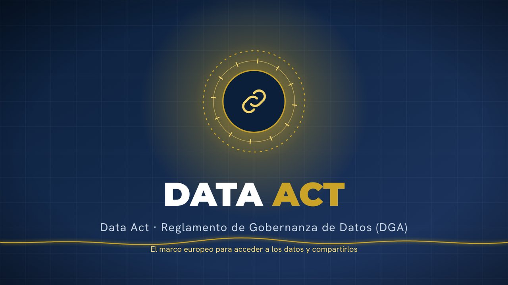

ARG
ARGARGOS › Normativa en 4 minutos › Data Act y DGA
El Data Act y la DGA en 4 minutos: de quién son los datos de los productos conectados
El Data Act se aplica en toda la Unión desde el 12 de septiembre de 2025: el usuario de un producto conectado tiene derecho a acceder a sus datos y compartirlos con quien elija. Junto al Reglamento de Gobernanza de Datos forma el marco europeo para acceder a los datos y compartirlos.

- 0:00¿De quién son?
- 0:15La norma
- 0:39En España
- 1:02Data Act
- 1:15Qué exige
- 1:45La DGA
- 2:04Fechas
- 2:28Europa
- 2:52Precedente
- 3:14Qué hacer
Datos clave
- 12 de septiembre de 2025: el Data Act se aplica en toda la Unión.
- 12 de septiembre de 2026: acceso a los datos desde el diseño en los productos que se comercialicen desde esa fecha.
- 12 de enero de 2027: se acaban los cargos por cambiar de proveedor de nube.
- 24 de septiembre de 2023: se aplica el Reglamento de Gobernanza de Datos (DGA).
- Acceso sencillo, seguro y gratuito del usuario a los datos de su producto, y derecho a compartirlos con un tercero.
- A una pyme, los datos se comparten solo al coste.
- En España no hay autoridad competente designada ni régimen sancionador nacional; los derechos ya se pueden exigir ante los tribunales.
- Precedente español: Datadis permite desde 2020 al consumidor acceder a sus datos de consumo eléctrico.
Transcripción
Texto completo de la locución
0:00 · ¿De quién son?
Tu tractor genera datos. Tu maquinaria, también. Tu ascensor, tu coche, tu contador. Pero esos datos se los queda el fabricante. ¿De quién son, en realidad?
0:15 · La norma
El Reglamento europeo de Datos, el Data Act, se aplica en toda la Unión desde el 12 de septiembre de 2025. El usuario de un producto conectado tiene derecho a acceder a sus datos, de forma sencilla, segura y gratuita, y a compartirlos con quien elija. Y desde el 12 de enero de 2027 ningún proveedor de nube podrá cobrar por la salida.
0:39 · En España
En España la norma obliga, pero falta quien la vigile. No hay autoridad competente designada. No hay régimen sancionador nacional. La Agencia de Protección de Datos supervisa solo lo que afecta a datos personales. Los derechos ya se pueden exigir ante los tribunales. Y una cláusula abusiva sobre datos es nula, sin necesidad de sanción.
1:02 · Data Act
El Data Act y el Reglamento de Gobernanza de Datos forman el marco europeo para acceder a los datos y compartirlos. El dato industrial deja de ser por defecto del fabricante.
1:15 · Qué exige
¿Qué exige al fabricante? Diseñar el producto para que el usuario acceda a sus datos en los que se comercialicen desde septiembre de 2026. Informar antes del contrato de qué datos genera y cómo se accede a ellos. Compartirlos con el tercero que designe el usuario en condiciones justas, a una pyme solo al coste. Y proteger los secretos comerciales con medidas pactadas. Los datos no personales del usuario solo según lo pactado con él.
1:45 · La DGA
El Reglamento de Gobernanza de Datos completa el cuadro. Reutilizar datos protegidos del sector público. Servicios de intermediación de datos, neutrales y registrados. Y el altruismo de datos para el interés general. El Ómnibus Digital propone integrarlo en el Data Act.
2:04 · Fechas
Las fechas 24 de septiembre de 2023 se aplica el Reglamento de Gobernanza de Datos. 12 de septiembre de 2025 se aplica el Data Act. 12 de septiembre de 2026. Acceso a los datos desde el diseño. Y 12 de enero de 2027 se acaban los cargos por cambiar de nube.
2:28 · Europa
En Europa el mapa es desigual. Alemania, un regulador que recibió más de 700 quejas en sus primeros meses. Países Bajos con ley y autoridad en vigor. Dinamarca, donde solo los tribunales imponen multas. Francia, que ya fijó en 0 euros las tasas de salida de la nube. Y España, Portugal e Italia sin autoridad designada.
2:52 · Precedente
En España ya hay un precedente. Datadis, que desde 2020 permite al consumidor acceder a sus datos de consumo eléctrico. La ley del sector eléctrico ya reconocía ese derecho. Los espacios de datos son la vía para compartir datos sin moverlos. Y un fabricante español con clientes en Alemania ya responde allí ante un regulador con poder de sanción.
3:14 · Qué hacer
¿Qué hacer ya? Fichas informativas por producto, un procedimiento para las peticiones de acceso, contratos justos y un plan de salida de la nube. ARGOS verifica que el acceso funciona de verdad, con pruebas sobre los sistemas reales y evidencia para el cliente o para el juez. Data Act, los datos, al servicio de quien los genera.
Preguntas frecuentes
¿De quién son los datos de un producto conectado?
Con el Data Act, el usuario de un producto conectado tiene derecho a acceder a los datos que genera, de forma sencilla, segura y gratuita, y a compartirlos con quien elija. El dato industrial deja de ser, por defecto, del fabricante.
¿Qué debe hacer un fabricante?
Diseñar el producto para que el usuario acceda a sus datos (en los productos que se comercialicen desde septiembre de 2026), informar antes del contrato de qué datos genera y cómo se accede, compartirlos con el tercero que designe el usuario en condiciones justas (a una pyme, solo al coste) y proteger los secretos comerciales con medidas pactadas.
¿Qué cambia para los proveedores de nube?
Desde el 12 de enero de 2027 ningún proveedor de nube podrá cobrar por la salida de datos al cambiar de proveedor.
¿Quién vigila el Data Act en España?
De momento nadie: no hay autoridad competente designada ni régimen sancionador nacional. La AEPD supervisa solo lo que afecta a datos personales. Aun así, los derechos ya se pueden exigir ante los tribunales y una cláusula abusiva sobre datos es nula.
¿Qué es la DGA o Reglamento de Gobernanza de Datos?
Completa el Data Act: regula la reutilización de datos protegidos del sector público, los servicios de intermediación de datos (neutrales y registrados) y el altruismo de datos para el interés general. El Ómnibus Digital propone integrarlo en el Data Act.
Fuentes oficiales
- Reglamento (UE) 2023/2854, de Datos (Data Act) (EUR-Lex)
- Reglamento (UE) 2022/868, de Gobernanza de Datos (EUR-Lex)
Sigue con
 RGPD y LOPDGDD
RGPD y LOPDGDDEl RGPD y la LOPDGDD en 4 minutos: qué exigen hoy y qué se sanciona en España
 EHDS
EHDSEl EHDS en 4 minutos: qué cambia el Espacio Europeo de Datos Sanitarios para hospitales y empresas de salud
 NIS2
NIS2NIS2 en 4 minutos: qué exige, multas, fechas y la situación singular de España
Locución y música generadas con inteligencia artificial (art. 50 del Reglamento de IA). Información general, no constituye asesoramiento jurídico; situación a noviembre de 2026, según las fichas de regulación de Software in a Box. Clips de vídeo con licencia de Envato.
Para incrustar esta presentación en otra web: <iframe src="https://argos.softwareinabox.eu/normativa/data-act-dga/presentacion/?embed=1" width="960" height="540" allow="autoplay; fullscreen" title="El Data Act y la DGA en 4 minutos: de quién son los datos de los productos conectados"></iframe> con un enlace a esta página.